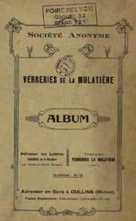
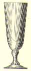
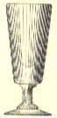
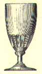
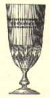
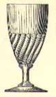
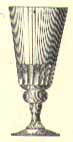
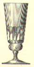
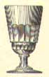

 |
Designation : named as "Chope Yvonne". Dénomination donnée : chope Yvonne fond rond. Taille : est proposé en 180, 185, et 190mm. Autre : article proposé par la plupart des verreries Francaises durant la période Absinthe. verre multi usages. |
 |
Designation : named as "Chope Yvonne". Dénomination donnée : chope Yvonne fond carré. Taille : est proposé en 180, 185, et 190mm. Autre : article proposé par la plupart des verreries Francaises durant la période Absinthe. verre multi usages. |
 |
Designation : named as absinthe egg glass. Dénomination donnée : verre à absinthe forme oeuf. Taille :est proposé dans les hauteurs trés précises de 152, 162 et 172mm. Déscription donnée :demi renforcé uni ou taillé côtes plates. Autre :modèle produit par la plupart des verreries Francaises. verre agréable et élégant lorsqu'il est uni. |
 |
Designation : named as absinthe egg glass. Dénomination donnée : verre à absinthe forme oeuf, apéro grand. Taille :est proposé dans les hauteurs trés précises de 152, 162 et 172mm. Autre :version luxueuse du verre forme oeuf. |
 |
Designation : named as absinthe swirl glass. Dénomination donnée : verre à absinthe forme oeuf torsades. Taille :est proposé dans les hauteurs trés précises de 152, 162 et 172mm. Déscription :peut être proposé avec des motifs au niveau du buvant. Autre :modèle trés classique produit par toutes les verreries de gobleteries Francaises. |
 |
Designation : named as absinthe glass "LYONNAIS". Dénomination donnée : nommé verre à Absinthe Lyonnais. Déscription :culot taillé Autre :modèle peu courant. pas trés agréable au niveau proportions. |
 |
Designation : named as absinthe glass. Dénomination donnée : nommé verre à Absinthe. Déscription :forme allongée, culot taillé à côtes plates Autre :modèle peu courant. pas trés agréable au niveau proportions. |
 |
Designation : named as absinthe glass. Dénomination donnée : nommé verre à Absinthe. Taille :proposé dans les tailles n°2 et 4 (les tailles vont de 1 à 7 en ordre décroissant). cette verrerie n'hésite pas à proposer des verres à Absinthe de petite taille, tel le n°4 pour ce verre. Déscription :à culot uni ou taillé à côtes plates. Autre :modèle relativement rare et recherché. surtout présent dans la région Rhône Alpes. |